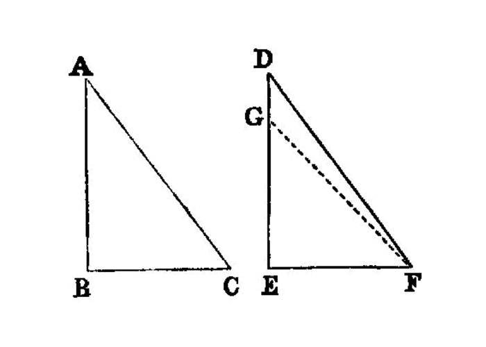
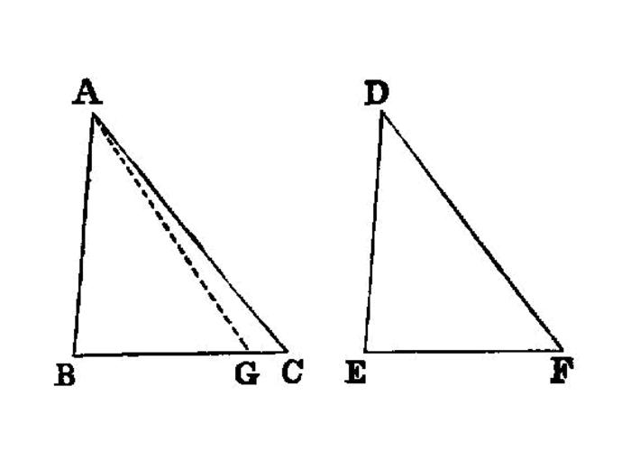

similar triangles
I.26
If two triangles have the two angles equal to two angles respectively, and one side equal to one side, namely, either the side adjoining the equal angles, [1] or that subtending one of the equal angles, they will also have the remaining sides equal to the remaining sides and the remaining angle to the remaining angle.
—Euclid
{kind=link}
Let ABC, DEF be two triangles having the two angles ABC, BCA equal to the two angles DEF, EFD respectively, namely the angle ABC to the angle DEF, and the angle BCA to the angle EFD; and let them also have one side equal to one side, first that adjoining the equal angles, namely BC to EF;
{kind=link}
I say that they will also have the remaining sides equal to the remaining sides respectively, namely AB to DE and AC to DF, and the remaining angle to the remaining angle, namely the angle BAC to the angle EDF.
For, if AB is unequal to DE, one of them is greater.
Let AB be greater, and let BG be made equal to DE; and let GC be joined.
Then, since BG is equal to DE, and BC to EF, the two sides GB, BC are equal to the two sides DE, EF respectively; and the angle GBC is equal to the angle DEF;
therefore the base GC is equal to the base DF, and the triangle GBC is equal to the triangle DEF, and the remaining angles will be equal to the remaining angles, namely those which the equal sides subtend; [I.4] therefore the angle GCB is equal to the angle DFE.
But the angle DFE is by hypothesis equal to the angle BCA; [2]
therefore the angle BCG is equal to the angle BCA, the less to the greater: which is impossible. Therefore AB is not unequal to DE, and is therefore equal to it.
But BC is also equal to EF;
therefore the two sides AB, BC are equal to the two sides DE, EF respectively, and the angle ABC is equal to the angle DEF; therefore the base AC is equal to the base DF, and the remaining angle BAC is equal to the remaining angle EDF. [I.4]
Again, let sides subtending equal angles be equal, as AB to DE;
I say again that the remaining sides will be equal to the remaining sides, namely AC to DF and BC to EF, and further the remaining angle BAC is equal to the remaining angle EDF.
For, if BC is unequal to EF, one of them is greater.
Let BC be greater, if possible, and let BH be made equal to EF; let AH be joined.
Then, since BH is equal to EF, and AB to DE, the two sides AB, BH are equal to the two sides DE, EF respectively, and they contain equal angles;
therefore the base AH is equal to the base DF,
and the triangle ABH is equal to the triangle DEF, and the remaining angles will be equal to the remaining angles, namely those which the equal sides subtend; [I.4]
therefore the angle BHA is equal to the angle EFD.
But the angle EFD is equal to the angle BCA; therefore, in the triangle AHC, the exterior angle BHA is equal to the interior and opposite angle BCA:
which is impossible. [I.16]
Therefore BC is not unequal to EF,
and is therefore equal to it.
But AB is also equal to DE; therefore the two sides AB, BC are equal to the two sides DE, EF respectively, and they contain equal angles;
therefore the base AC is equal to the base DF, the triangle ABC equal to the triangle DEF,
and the remaining angle BAC equal to the remaining angle EDF. [I.4]
Therefore etc.
references
[I.4]: /elem.1.4 “Book 1 - Proposition 4” [I.16]: /elem.1.16 “Book 1 - Proposition 16”